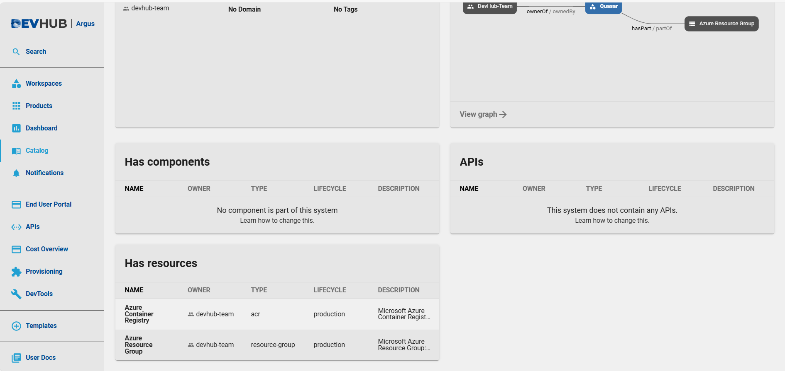
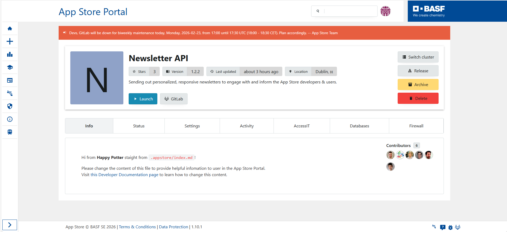
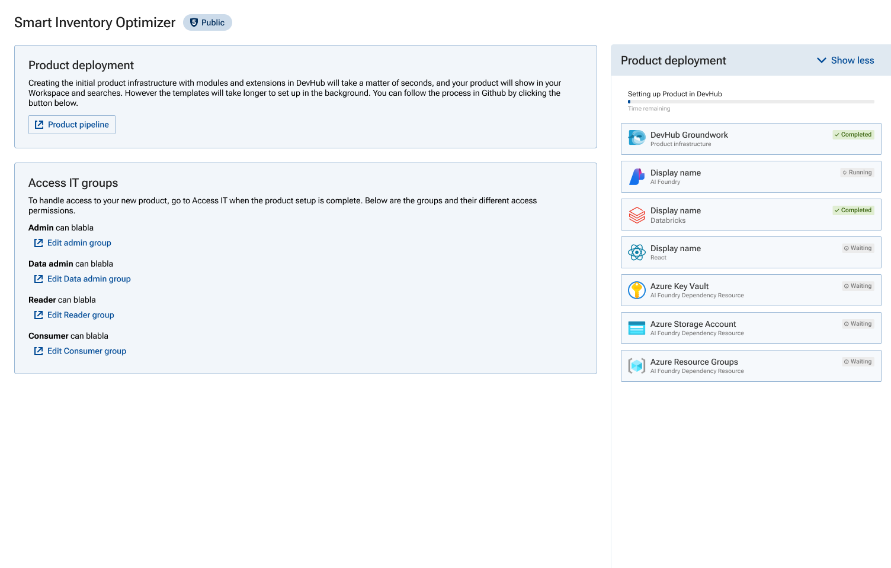
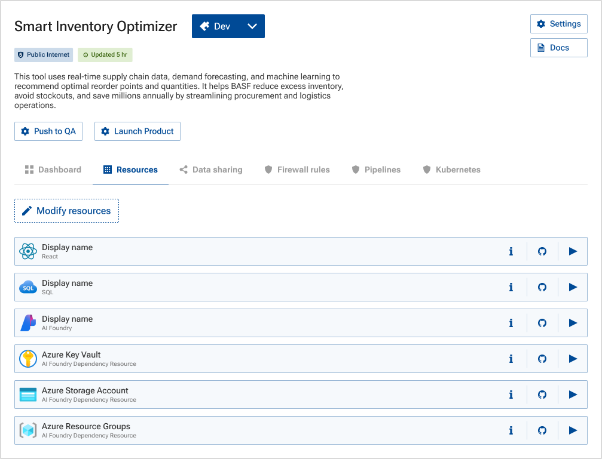
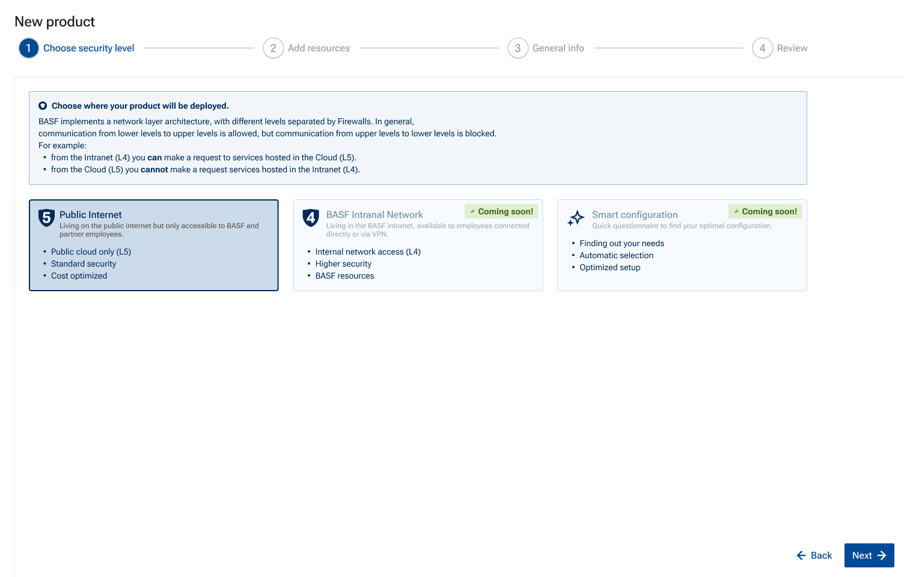
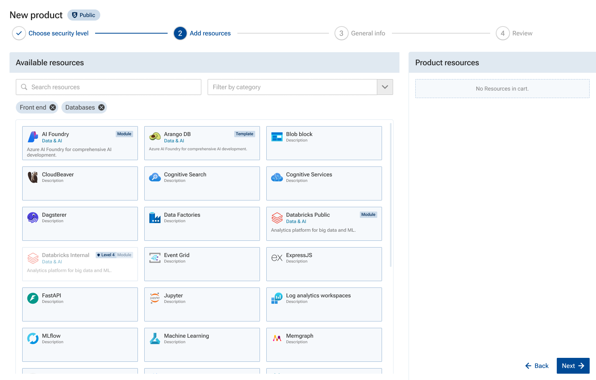
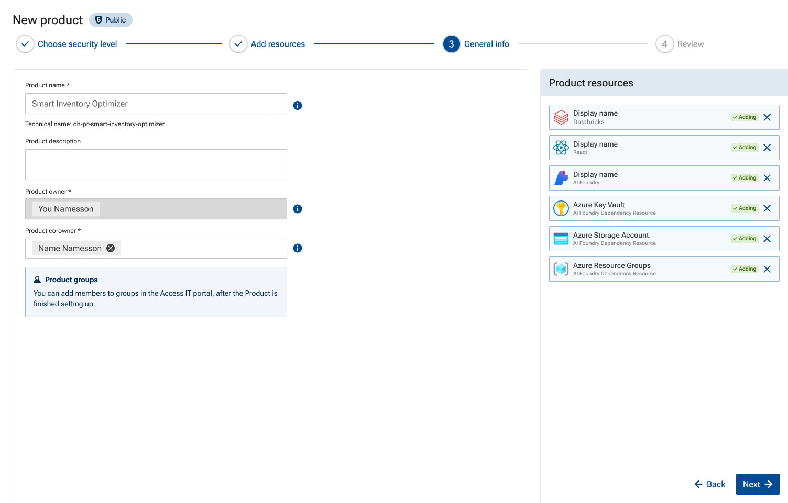
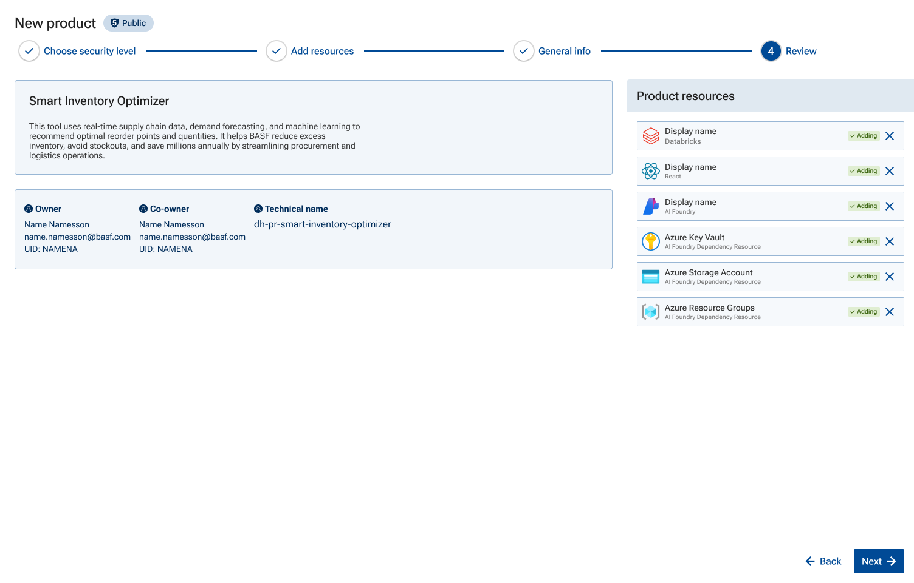

Collaboration That Doesn't End at the Coffee Machine
Three platforms, with three support systems, three development teams, too much overlap, and no cross-platform clarity or collaboration. I helped merge them into one to save on support and development, to foster collaboration between all their 2000+ users, beyond the colleagues at the coffee machine.
Three platforms, three support teams, three dev teams — each solving the same problems alone, invisible to the other two. Merging them meant every improvement could finally reach everyone, not just whoever happened to be on the right platform.
- Reused what was familiar. Based the new product overview on patterns the least technical, most disruption-averse group already knew.
- Split editing from adding. Batching them into one cart implied a risk that wasn't there.
- Set safe defaults everywhere. The automated flow kept working without anyone needing to understand the new options it exposed.
Three separate budgets that used to fund three aging platforms now fund one. Improvements that used to help whichever team happened to build them now reach everyone — the handoff flow I built moved the conversation from messy static Github threads to contextually dynamic Figma prototypes.
The Problem
How do you merge three developer platforms, used by ~2k people, without breaking feature parity, interrupting anyone's work, or alienating the users who'd never had to think about any of this before?
Background
Developers and Data scientists in need of easier collaboration
BASF developers, data scientists and business analysts had three platforms to build solutions to their problems: Argus, the Data Science Platform, and the AppStore. They all worked but in isolation from one another, without a clear use case differentiation, and with very different ways of working.
Collaboration between the users building solutions on each of the platforms didn't really exist, and collaboration only stretched as far as whoever you happened to run into at the coffee machine. One example of what these platforms made possible when the idea worked: PlantGPT, a generative-AI co-pilot built for plant operators to supply important documentation at a moments notice.
BASF decided to merge all three into one platform, DevHub, not just to consolidate tools, but to bring real design to systems that were lacking, and to make collaboration reach past the coffee machine.
Discovery
Auditing the platforms before asking users about them
I audited all three platforms first — documentation, analytics, tutorial videos — before talking to anyone. Then I interviewed all three Product Owners, then users across every group: developers, data scientists, non-technical builders, including students and interns.
Reviewed Argus, Data Science Platform, and AppStore documentation, analytics, and video walkthroughs independently before any interviews. Confirmed what I expected: functionally solid systems that had never had design attention.
Mapped where their roadmaps actually disagreed. Three POs meant three roadmaps and three definitions of done.
Five concerns came up repeatedly: feature parity, migration safety, cost, support quality, and whether novice users could still build without expert help. These became the brief's evidence base instead of the POs' assumptions.
Ranked by how often each came up, not by instinct. Feature parity led by a wide margin, tightly coupled to independence — the same "will I lose something" anxiety showed up whether the question was about a missing capability or about building without expert help. Migration safety, support, and cost followed, in that order. Underneath all five: the three platforms weren't duplicating each other's work at the team level, they were converging on the same needs with no visibility between them — so similar solutions got built more than once, not from carelessness but because nothing showed anyone what already existed.
Five concerns, ranked by how often they came up
Ranked by mention frequency across interviews, not gut feel.
Key Decisions
Three starting points, one overview
Designing one overview for three very different starting points. DevHub had to work for three groups who'd never used anything alike. DSP users had no self service, or interface at all. They set up products over a phone call with an operator, walking through the options manually. Argus users were technical and experienced, working with a platform built on a large, well-established open-source platform framework. Customizing it to match our designs ended up costing far more dev time than planned, with more problems surfacing the deeper the team went. The AppStore users were in general the least technical, by far the largest group, and were working with a fairly well-designed platform.
I decided to base DevHub's main feature the product overview on AppStore's structure, so its users, the largest, least technical group would recognize themselves and navigate the way they always had. For Argus, this was a straightforward improvement regardless of where the pattern came from as it was an improvement to their old overview. For DSP, replacing a manual, operator-led setup call with an automated flow was an huge step forward.
The AppStore users were met with more configuration options than they had had before, because DevHub now exposed capability that used to live only in Argus and DSP. We worked hard to make sure we could give every resource a default setting so the guided product creation wizard still worked without everyone needing to understand everything to get started building. The platform merging also meant listing contacts and a payment account before building anything. A deliberate governance improvement, curbing the kind of frivolous, unaccounted-for resource creation that the old AppStore allowed. The trade-off: that upfront commitment made experimentation feel less casual than it used to.
Three starting points, one anchored overview
Argus and AppStore's actual overview screens — DSP had no interface to show


Trading visual polish for dev time, on a bet that didn't pay off. Early Argus screens shipped with the platform framework's own generic components instead of BASF-styled ones — a call I signed off on along with the team. Hand-styling everything early looked like wasted effort if an upcoming update to the BASF design system landed on schedule and made those components pick up that styling almost automatically. It didn't land in time. The manual styling work had to happen anyway, later and under more pressure — one more way that framework cost time instead of saving it.
Edit/cart redesign. Every create and update action triggered a ~45-minute pipeline run. The UI had to batch changes. A first version was built where clicking "Modify resources" moved every existing resource into what resembled edit mode in a cart, before anything was touched. The same screen also surfaced every resource available to add, whether the user had asked for it or not. What should have been a short list of intended changes became the full catalog of everything that existed and everything that could be added, all at once — implying change had already started and burying whatever the user actually came to do. I made sure there was a clear distinction between the product's existing resources and the resources actually being changed or deleted, and reserved carts for new additions only. Edits to existing resources happened in place, in the background. A tag — added, updated, deleted — appeared only on resources actually touched. Other users could be viewing the same live state in separate sessions, so an explicit editing mode had to exist to account for that.
The pre-launch scenario test surfaced exactly this gap: people lost the pipeline once they left the confirmation screen. The fix I designed — a persistent, collapsible cart that tracks the run itself, wherever you are in DevHub — never shipped. Leaving the confirmation screen when hitting "create product" still loses the way back to build status; the real 45-minute run only shows via a GitHub link on that one screen.

Other team's version
Redesign

Handoff redesign. Ticket and design feedback lived in GitHub rpeos, with long comment sections, working with screen grabs annotated in Paint. Every detail needed explaining, but context still got lost, So I decided to move the conversation into the Figma file, where comments can be made in much clearer connection to the design. My PO could measure things directly, pull hex codes, check spacing and states — instead of working from a screenshot that needed explaining and still missed things. Devs asked implementation questions against the dynamic live design instead of a static image.
Scope I Held Back
Interviews kept surfacing a need for collaboration and community — people wanted to build on what others had already solved, not start from zero every time. My answer was a marketplace where users could browse and reuse each other's solutions. I held it back. Building shelf space for solutions before DevHub's core features were even stable would have meant solving the wrong problem first. It's still the obvious next phase — just not this one.
How Might We…
Merge three platforms without any user — least of all the non-technical ones — losing the ability to build independently, while preserving feature parity, keeping migration safe, and making cost changes transparent as they happen?
Design
One flow, built for many different starting points
The product creation wizard and product update flow — had to clear enough to give novice users confidence, but versatile enough for advanced users to have all their needs addressed.
The single creation and update flow, mapped end-to-end across developer, data scientist, and novice user paths.
Every significant capability across Argus, the Data Science Platform, and the AppStore, mapped to confirm what DevHub would cover — the direct answer to the biggest user concern.
A single guided flow for novice users — proof they could build in DevHub without knowing the infrastructure behind it.
All components built within the BASF Atoms design system. Where patterns didn't exist — the app wizard step flow — I proposed and documented extensions.
The product creation wizard, step by step




Testing & Iterations
Scenario-led testing with the full beta group, not open feedback
Before the beta launched, I ran a single scenario-led test with the full group — about 50 people, not just the product owners and developers who used DevHub day to day. Each person clicked through an interactive Figma prototype toward a few specific goals — create an app, adjust permissions — and was instructed to leave feedback as comments directly on the file. From there, each round of iteration went back to the team rather than another full-group test. The app wizard and permissions model both went through two rounds based on what surfaced in that one pass.
One signal from that test mattered more than it looked at the time: people kept losing track of a running pipeline once they clicked away from the confirmation screen — nothing showed status anywhere else. That gap is what the persistent, collapsible process-run cart under Key Decisions was designed to fix.

What I'd Do Differently Here
I had a name attached to every comment, but I never cross-referenced them against role. A note from a novice user and one from a developer who'd been running Argus for years sat in the same list, indistinguishable unless I already recognized the name. And the flow itself was simple enough that most of what came back stayed minor — requests for prefilled fields, small tweaks — never surfacing whether the "can I build without help" anxiety was actually resolved.
The other miss sits exactly where this case study should have numbers. A survey was built and ready to go at the end of the product creation flow, designed to catch the completion and error data the scenario sessions couldn't. It never shipped with the beta — a team reorg ate the few weeks right before launch when getting it live actually mattered, and it fell through the gap. That's the honest reason I have no steps-to-completion or error-rate numbers to point to: not that nobody looked, but that the one thing built to measure it never went live.
Results
One platform where three used to run separately
Final Thoughts
Where I'd push harder, looking back
I'd push harder, earlier, for direct access to roadmap decisions instead of discovery mediated mostly through the POs. It's efficient. It's also filtered, and it's probably why the novice-user testing gap wasn't caught sooner.
Argus itself ran on a large, well-established open-source platform framework. Customizing it to match our designs cost far more dev time than planned, and the deeper the team went, the more problems surfaced — that's the steep learning curve I mentioned earlier. I could feel the friction every time I ran a walkthrough, and had a hunch the customization costs ran deeper than anyone had budgeted for. But that call belonged to engineering, not design. Even with a hunch, it wasn't mine to make.
The platform launched under deadline pressure before its operational maturity fully matched its feature set. I didn't push back hard enough on that at the time.
One gap I didn't close myself: showing people the cost impact of a build before they commit to it. I scoped that as a master's thesis project and mentored the student who designed the actual solution.
Anything missing from this case study?
Takes about 30 seconds — I read every response.
Are you here as a...
Was this case study relevant to what you were looking for?
What's missing or unclear? (optional)